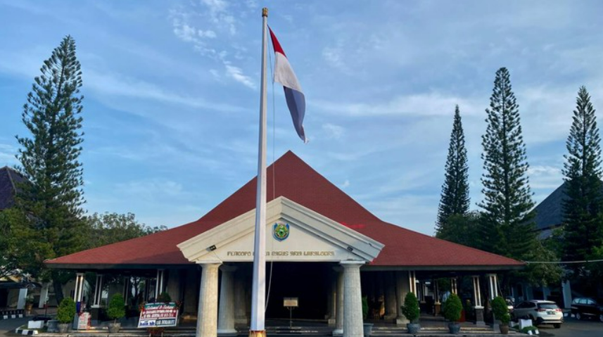
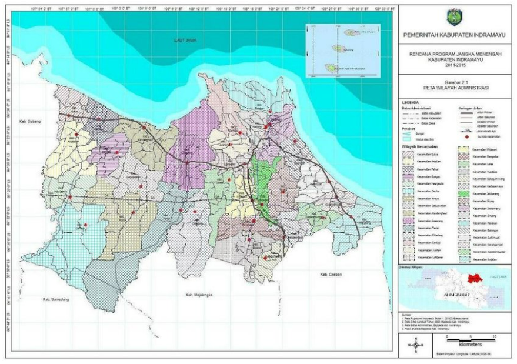
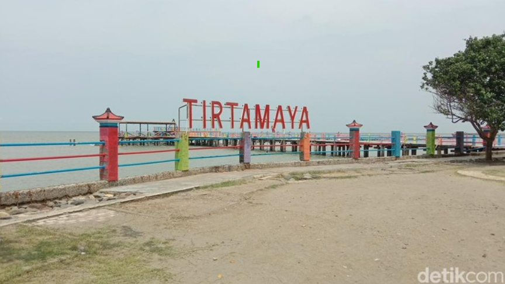
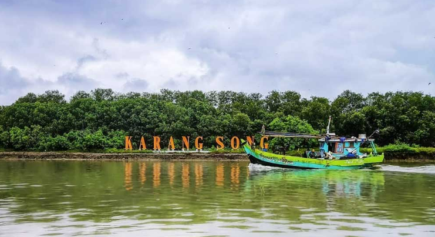

Sejarah
Nama Indramayu diyakini berasal dari nama istri Adipati Arya Wiralodra, yakni Nyi Endang Darma Ayu, yang kemudian dikenal sebagai Dewi Indra Mayu. Indramayu menjadi salah satu daerah penting di pesisir utara Jawa yang berkembang sejak masa Kesultanan Cirebon. Wilayah ini dulunya merupakan pelabuhan penting untuk perdagangan rempah-rempah dan komoditas pertanian. Kehidupan masyarakatnya sangat dipengaruhi oleh budaya pesisir yang khas, termasuk dalam seni pertunjukan seperti tari topeng dan sintren.
geografis
Secara geografis, Kabupaten Indramayu berbatasan dengan: BARAT Kabupaten Subang, TIMUR Laut Jawa dan Kabupaten Cirebon ,SELATAN Kabupaten Majalengka, Kabupaten Sumedang Kabupaten Cirebon, UTARA Laut Jawa. Cakupan wilayah administrasi pemerintah Kabupaten Indramayu saat ini terdiri dari 31 Kecamatan,309 desa dan 8 kelurahan, dengan luas wilayah 204,011 ha atau 2.040.110 Km dengan panjang garis pantai 147 km yang membentang sepanjang pantai utara antara Cirebon-Subang, dengan banyaknya desa pantai 36 desa dari 11 kecamatan.
Wisata
Indramayu memiliki beragam destinasi wisata menarik, mulai dari wisata bahari, kebudayaan, hingga ekowisata. Kawasan pesisirnya kini banyak dikembangkan sebagai tujuan wisata ramah lingkungan.
Pantai Tirtamaya
Merupakan salah satu pantai terkenal di Indramayu yang terletak di Kecamatan Juntinyuat. Pantai ini ramai dikunjungi saat akhir pekan karena keindahan lautnya dan suasana yang menyenangkan untuk rekreasi keluarga.
Hutan Mangrove Karangsong
Terletak di Desa Karangsong, Kecamatan Indramayu, hutan mangrove ini menjadi destinasi ekowisata yang populer. Pengunjung dapat menyusuri jembatan kayu di tengah hutan mangrove sambil menikmati udara segar dan keanekaragaman hayati. Kawasan ini juga menjadi upaya pelestarian lingkungan pesisir dan habitat bagi berbagai jenis burung.